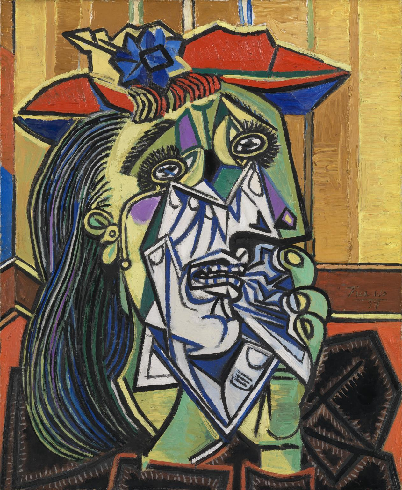

PABLO PICASSO E LA FIGURA FEMMINILE
Commento sulla riflessione di Picasso↑ cliccare per scaricare il pdf ↑
-
UN ARTISTA COME POCHI
Nasce a Malaga e viene educato all’arte fin da piccolo: il padre era pittore e professore e incoraggiò il talento del figlio.
Dal 1892 al 1900 prosegue i suoi studi alla scuola di belle arti di Coruna e all’accadema di Barcellona.
A partire del 1896 produce i suoi primi quadri, sono composizioni di carattere religioso e ritratti, con uno stile tradizionale e realistico.
Verso il 1899 Picasso entra in una fase sperimentale, stimolato dal modernismo e dal post impressionismo francese.
Tra il 1900 e il 1901 compie continui viaggi a Parigi e produce opere che si spingono ad un’espressività sempre più decisa.
L’importante influenza degli Impressionisti e la frequentazione dell’ambiente parigino lo portano alla fase del Periodo Blu, che si compie tra il 1901 e il 1904.
Periodo Blu: Come suggerisce la definizione, in questi anni l’artista fa uso esclusivamente di colori freddi e ritrae personaggi poveri ed emarginati, segnati dal dolore e sconfitti dalla vita. Le opere di questo periodo infatti sono suggestive e venate dalla tristezza.
Tra il 1904 e il 1906 si apre il Periodo Rosa.
Periodo Rosa: caratterizzato dall’uso di tiepide gradazioni di rosa, ocra e arancione. Ha così inizio il secondo, importante momento della sua maturazione artistica. I soggetti ritratti ora dall’artista provengono in prevalenza dall’ambiente del circo e dei saltimbanchi.
Tra il 1907 e il 1908, dopo il soggiorno a Gòsol, Picasso conosce Matisse e scopre l’Arte Africana.
Arte Africana: in questo periodo Picasso giunge alla simultaneità delle immagini, caratteristica tipica del nuovo nascente linguaggio cubista.
“L’opera deve creare forme, non imitarle. E questo, lo scultore africano l’ha sempre saputo”.
Attraversa poi un periodo di crisi personale che lo porta a compiere la difficile trasformazione stilistica che lo condurrà al Cubismo.
Cubismo: nel 1907 realizza le Demoiselles d’Avignon, l’opera che segna l’inizio del movimento Cubista. Alla fase analitica ( 1909 - 1911 ) segue quella sintetica ( 1912 - 1913 ) E’ quest’ultima la fase più intesta e felice del cubismo picassiano: i colori si sono fatti brillanti e le superfici perfettamente piatte. L’uso dei collage, inoltre, dà a ogni composizione un significo nuovo e provocatorio.
Con la nascita delle Demoiselles d’Avignon Picasso approfondisce la conoscenza dell’arte africana e conosce Braque, con lui sviluppa la fondamentale concezione delle visioni multiple e simultanee su cui si basa il cubismo.
Tra il 1917 e il 1924 per Picasso si apre una nuova svolta stilistica: è il Periodo Classico
Periodo Classico: introduzione di temi classici, immagini sintetiche, forme solide e composizioni molto equilibrate. In questo periodo nel quale si trova in Italia, lavora anche per il teatro, come costumista e scenografo.
Dal 1937 si accosta al Surrealismo e nasce Guernica.
Da questo momento fino alla morte conosce un’attività artistica molto intensa. Si dedica alla grafica, alla ceramica, alla scultura.
Muore a Parigi a 91 anni.
-
L’attesa (Margot)
AUTORE:Pablo Picasso
DATAZIONE:1901
TECNICA E MISURE:Olio su cartone; 69.5 x 57 cm
LUOGO DI CONSERVAZIONE:Museu Picasso - Barcellona
SOGGETTO O TEMA:Conosciuta anche come “donnaimbellettata” o “Prostituta con una mano sulla spalla
FASE ARTISTICA PICASSIANA E:Fase influenzata dagli artisti impressionisti / post-impressionisti tra cui Lautrec
DESCRIZIONE ICONOGRAFICA E ANALISI STILISTICA: Il quadro non segue un vero e proprio stile artistico, ma possiamo confonderlo con l’impressionismo per i suoi tocchi di colore, bensì questi ultimi vengono grattati via in parte dell’artista per creare forza espressiva e meno intensità cromatica
INTERPRETAZIONE:Questo quadro viene dipinto per rappresentare la vita dei borghi notturni parigini, i quali erano affascinanti e pieni di contraddizioni. Da questo dipinto trapela la contraddizione tra gli eccessi e le trasgressioni tipiche della Parigi notturna dell’epoca e la solitudine e la tristezza.
-
Donna Seduta
AUTORE:Pablo Picasso
DATAZIONE:1905
TECNICA E MISURE:Tempera su tela 90 x 71 cm
LUOGO DI CONSERVAZIONE:Staatsgalerie - Stoccarda
SOGGETTO O TEMA:Ritratto di una madre con il figlio, acrobati del circo Medrano di Parigi
FASE ARTISTICA PICASSIANA E NESSI STORICOBIOGRAFICI:Periodo rosa, caratterizzato dall’uso di toni caldi, soprattutto ocra, rosa e colori pastello. Picasso viveva a Montmatre-Parigi
DESCRIZIONE ICONOGRAFICA E ANALISI STILISTICA: I volti trapelano tristezza, così come le braccia incrociate del bambino.
INTERPRETAZIONE:Picasso crea questa e altre tele sulla vita degli acrobati, perché in quel periodo frequentava spesso il Circo Medrano di Parigi. La vita piena di difficoltà degli artisti si riflette in questo insieme di opere.
-
Madre e figlio (Acrobati)
AUTORE:Pablo Picasso
DATAZIONE:1902
TECNICA E MISURE:Olio su tela 100 x 69,2 cm
LUOGO DI CONSERVAZIONE:Detroit Institut of Arts
SOGGETTO O TEMA:Amante dell'amico suicida
FASE ARTISTICA PICASSIANA E NESSI STORICOBIOGRAFICI:Fase blu, in quel periodo Picasso, perseguitato dal suicidio di un suo amico, associa il blu al simbolismo della notte, del male e della morte.
DESCRIZIONE ICONOGRAFICA E ANALISI STILISTICA: La tristezza trapela dalla posizione dellespalle e di chiusura del corpo della donna,oltre che dall’epressione corrucciata delviso. Anche la monocromia blu influisce rendendo cupa l’opera.
INTERPRETAZIONE:La donna sembra prigioniera delle sue emozioni, cupa e malinconica
-
Donna con Ventaglio
AUTORE:Pablo Picasso
DATAZIONE:1907
TECNICA E MISURE:Olio su tela 152 x 101 cm
LUOGO DI CONSERVAZIONE:Ermitage - San Pietroburgo
SOGGETTO O TEMA:Donna seduta con un ventaglio in grembo
FASE ARTISTICA PICASSIANA E NESSI STORICOBIOGRAFICI:Epoca negra, periodo nel quale Picasso viene influenzato dall’Arte africana durante le sue visite ai musei Parigini.
DESCRIZIONE ICONOGRAFICA E ANALISI STILISTICA: In “donna con ventaglio” si trova un elegante equilibrio tra le diverse correnti e influenze che Picasso stava attraversando: Cezanne e l’Arte negra. La postura rigida della donna, che rappresenta un tutt’uno con la sedia ricorda le sacerdotesse rappresentate nelle pitture egizie. Inoltre le grandi dimensioni e la prospettiva ascendente provocano un senso di timore nell’osservatore.
INTERPRETAZIONE:Attraverso l’uso dei tipici caratteri dell’ arte africana, colma di tratti rigidi, cupi e maestosi, l’autore vuole trasmettere un senso di soggezione e inferiorità in chi osserva l’opera
-
Ritratto di Donna
AUTORE:Pablo Picasso
DATAZIONE:1910
TECNICA E MISURE:Olio su tela 100,6 x 81,3 cm
LUOGO DI CONSERVAZIONE:Museum of Fine Arts - Boston
SOGGETTO O TEMA:Ritratto femminile
FASE ARTISTICA PICASSIANA E NESSI STORICOBIOGRAFICI:Cubismo. L’artista decide di lasciare Montmatre per trasferirsi nei pressi di Palce Pigalle e dedicarsi ai primi quadri cubisti.
DESCRIZIONE ICONOGRAFICA E ANALISI STILISTICA: Nelle opere cubiste non è spesso facile cogliere ciò che l’autore voleva comunicare. Si capisce che questo è un ritratto di donna perché possiamo cogliere capelli, occhi, naso e bocca, un colletto e al di sotto una sorta di giacca.
INTERPRETAZIONE:Picasso nelle sue opere cubiste utilizza la visione simultanea, infatti il viso e il corpo della donna sono visti da più prospettive, per poterla rappresentare in modo tridimensionale.
-
L'Italiana
AUTORE:Pablo Picasso
DATAZIONE:1913-14
TECNICA E MISURE:Olio su tela 149,9 x 99,4 cm
LUOGO DI CONSERVAZIONE:MET - New York
SOGGETTO O TEMA:Nudo femminile seduto
FASE ARTISTICA PICASSIANA E NESSI STORICOBIOGRAFICI:Cubismo analitico e Cubismo sintetico. Picasso, scettico per i risultati delle sue opere, ammorbidisce il rigore geometrico.
DESCRIZIONE ICONOGRAFICA E ANALISI STILISTICA: Picasso per realizzare quest’opera unisce i colori del Cubismo analitico alla struttura schematica del cubismo sintetico. La donna è nuda e sputa su una poltrona molto grande. La figura è contornata da una linea penetrante. L’ opera ha come sfondo una parete spoglia e neutra.
INTERPRETAZIONE:Si pensa che la donna in camicia rappresenti il momento in cui ha termine il cubismo analitico ed ha inizio quello sintetico
-
L'Italiana
AUTORE:Pablo Picasso
DATAZIONE:1917
TECNICA E MISURE:Olio su tela 149 x 101,5 cm
LUOGO DI CONSERVAZIONE:E.G. Bührle Collection - Zurigo
SOGGETTO O TEMA:Figura femminile in costume d’epoca
FASE ARTISTICA PICASSIANA E NESSI STORICOBIOGRAFICI:Cubismo con influssi di neoclassicismo. Nel 1917 Picasso vive in Italia, a Roma, collaborando allo spettacolo Parade.
DESCRIZIONE ICONOGRAFICA E ANALISI STILISTICA: Passeggiando in Piazza di Spagna Picasso vede delle donne in costume che decide di rappresentare con questa figura di donna.
INTERPRETAZIONE:Anche in quest’opera l’autore ritrae la donna attraverso la visione simultanea.
-
Ritratto di Olga in poltrona
AUTORE:Pablo Picasso
DATAZIONE:1917
TECNICA E MISURE:Olio su tela 130 x 88,8
LUOGO DI CONSERVAZIONE:Musée National Picasso - Parigi
SOGGETTO O TEMA:Donna seduta in poltrona con ventaglio in grembo.
FASE ARTISTICA PICASSIANA E NESSI STORICOBIOGRAFICI:Periodo classico. Picasso si innamora di una ballerina Russa, Olga Kokhlova durante la sua permanenza in Italia. Qui subisce gli influssi dell’arte Classica. I suoi soggetti iniziano ad essere rappresentati in maniera più chiara e sintetica.
DESCRIZIONE ICONOGRAFICA E ANALISI STILISTICA: Si nota il contrasto tra l’accuratezza dei dettagli della donna e dell’abito e la totale mancanza dello sfondo e della poltrona.
INTERPRETAZIONE:Lo sfondo manca perché secondo il punto di vista di Picasso era importante solo rappresentare Olga, senza bisogno di una rappresentazione oggettiva.
-
Madre con Figlio
AUTORE:Pablo Picasso
DATAZIONE:1921
TECNICA E MISURE:Olio su tela 142,9 x 172,7
LUOGO DI CONSERVAZIONE:The Art Institute - Chicago
SOGGETTO O TEMA:Donna seduta con bimbo nudo sulle gambe
FASE ARTISTICA PICASSIANA E NESSI STORICOBIOGRAFICI:Periodo classico. Tra il 1917 e il 1924 Picasso si apre ad una nuova svolta stilistica, introducendo temi classici, immagini sintetiche, forme solide e composizioni equilibrate.
DESCRIZIONE ICONOGRAFICA E ANALISI STILISTICA: Nel 1921 nacque Paolo, figlio di Picasso e Olga e in questo periodo molte furono le opere dell’artista ispirate alla maternità. Pare in origine fosse rappresentata anche una figura maschile in questo dipinto, che venne poi rimossa dall’autore.
INTERPRETAZIONE:Lo sfondo mediterraneo è simbolico e universale perché rappresenta terra, mare e cielo.
-

Donna piangente
AUTORE:Pablo Picasso
DATAZIONE:1937
TECNICA E MISURE:Olio su tela 60,8 x 50 cm
LUOGO DI CONSERVAZIONE:Tate Gallery - Londra
SOGGETTO O TEMA:Donna in lacrime
FASE ARTISTICA PICASSIANA E NESSI STORICOBIOGRAFICI:Cubismo
DESCRIZIONE ICONOGRAFICA E ANALISI STILISTICA: La scomposizione in parti tipica del cubismo non stravolge completamente il volto della donna, ma attraverso la visione simultanea coglie tutti i suoi aspetti.
INTERPRETAZIONE:Picasso nell’opera ritrae Dora Maar, sua amante negli anni 1930-40, cercando di rappresentarla secondo la sua personale visione profonda e non superficiale.
-
Donna giacente con gatto
AUTORE:Pablo Picasso
DATAZIONE:1964
TECNICA E MISURE:Olio su tela 130 x 195 cm
LUOGO DI CONSERVAZIONE:Staatsgalerie - Stoccarda
SOGGETTO O TEMA:Donna nuda distesa che gioca con un gatto
FASE ARTISTICA PICASSIANA E NESSI STORICOBIOGRAFICI:Surrealismo
DESCRIZIONE ICONOGRAFICA E ANALISI STILISTICA: Un nudo innocente, dal fascino surrealista, con queste estremità grandi e arrotondate, che mitigano la sensualità del nudo, come fosse visto attraverso gli occhi di un bambino.
INTERPRETAZIONE:Il dettaglio del gatto che gioca con la donna rende il dipinto fresco e gioioso.